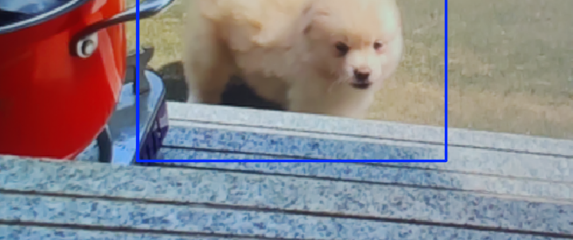
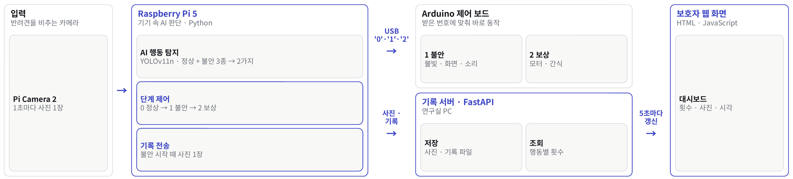
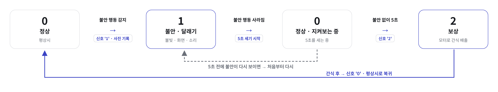
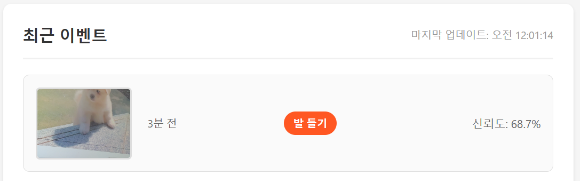

01
개요

문제
- 1인 가구 반려견이 혼자 있을 때 생기는 불안 행동을 보호자가 계속 지켜볼 수 없음
해결
- Raspberry Pi 5가 1초마다 행동을 추론하고, 불안하면 LED · LCD · 스피커로 달래고 진정되면 간식으로 보상
- 불안이 시작될 때 사진 1장을 서버에 기록해 보호자가 대시보드로 확인
02
카메라 → 엣지 AI → 하드웨어 → 웹

Raspberry Pi 5판단
YOLOv11n 행동 탐지(신뢰도 0.5 이상) + 상태 머신
Arduino Uno출력
USB 시리얼로 받은 ‘0’ · ‘1’ · ‘2’에 맞춰 LED · LCD · 스피커 · 서보모터 제어
FastAPI기록
불안 시작 사진 · 라벨 · 신뢰도 · 시각 저장, 대시보드에 제공
내 작업
03
정상 → 불안 → 보상 상태 머신

설계한 규칙
- 진정됐을 때만 보상: 불안이 멈춘 뒤 3초 동안 불안 행동이 보이지 않으면 간식을 줘서, AI가 한 순간 잘못 판단해도 간식이 나가지 않게 함
- 바뀔 때만 전송: 상태가 바뀐 순간에만 숫자 한 글자를 보내 Arduino가 같은 동작을 반복하지 않음
- 사진은 한 장만: 불안이 새로 시작될 때만 사진 1장을 기록해 같은 장면이 계속 쌓이지 않게 함
1초 주기 처리 과정
프레임 촬영Pi Camera 2 · 640×480
행동 탐지정상 + 불안 행동 3종 탐지 → 정상 · 불안으로 묶음
상태 갱신타이머 확인 후 0 · 1 · 2 결정
출력 · 기록Arduino로 상태 코드, 불안이 새로 시작될 때만 서버로 사진
04
FastAPI 서버와 보호자 대시보드

| 주소 | 하는 일 |
|---|---|
POST /upload | Pi가 보낸 사진을 저장하고 이벤트 기록 |
GET /events | 최신순 이벤트 목록 |
GET /stats | 저장된 기록 수 집계 |
GET /images | 감지 사진 제공 |